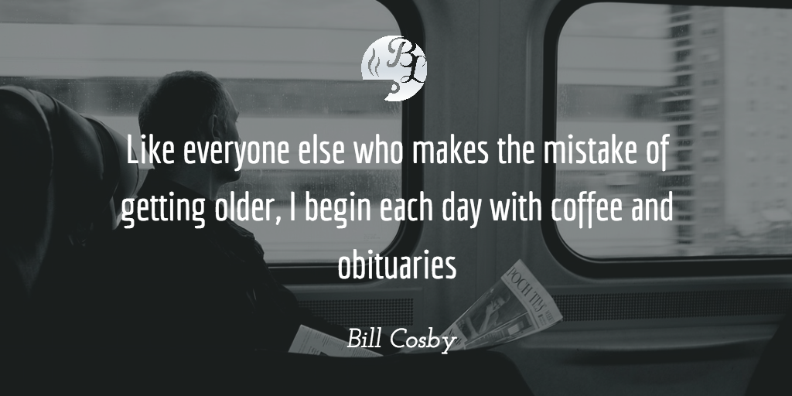

Benefits
Benefits of Having Coffee
- Cut the pain
Two cups of coffee can cut post-workout muscle pain by up to 48%. From the Journal of Pain, March 2007 - Increase your fiber intake
A cup of brewed coffee represents a contribution of up to 1.8 grams of fiber of the recommended intake of 20-38 grams. From the Journal of Agricultural and Food Chemistry - Protection against cirrhosis of the liver
Of course, you could just cut down on the alcohol intake. From the Archives of Internal Medicine . Another more recent study also showed coffee’s liver protecting benefits. link. Yet another study showed that both coffee and decaffeinated coffee lowered the liver enzyme levels of coffee drinkers. This study was published in the Hepatology Journal. - Lowered risk of Type 2 Diabetes
Those who consumed 6 or more cups per day had a 22% lower risk of diabetes. From the Archives of Internal Medicine (link). A recent review of research conducted by Harvard’s Dr. Frank Hu showed that the risk of type II diabetes decreases by 9% for each daily cup of coffee consumed. Decaf coffee decreased risk by 6% per cup.

- Lowered risk of Alzheimer’s disease
There is considerable evidence that caffeine may protect against Alzheimer’s disease. From the European Journal of Neurology (link). A recent study also isolated the compounds in roasted coffee that may be responsible for preventing the build-up of the brain plaque believed to cause the disease.